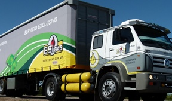
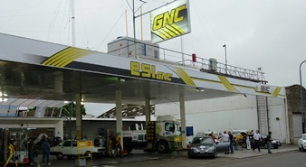
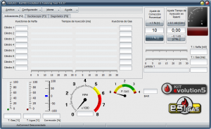

El impacto del cambio climático y el calentamiento global es más amplio de lo que se cree
TOKIO— El calentamiento global está teniendo un impacto en los sistemas humanos y naturales en todo el mundo
El gas natural es el combustible con menor impacto ambiental
ES APROPIADO para la generación de electricidad, el funcionamiento de calderas y hornos industriales, climatización y otros usos comerciale
El humo del diésel causa cáncer de pulmón
La OMS concluye que el humo del diésel causa cáncer de pulmón
LOGÍSTICA ECOLÓGICA
Logística Ecológica
Esta División de nuestra empresa se dedicada al transporte y distribución de cargas a nivel nacional en corta, media y larga distancia. Con atención personalizada adaptada a cada necesidad, disponibilidad de...

ESTACIONES DE SERVICIO
Contacto
Contamos con Estaciones de Servicio de carga de GNC en Mendoza y Rosario. Contamos con una Tarjeta de Puntos llamada Esigold con la cual puede disfrutar de premios con el canje de sus...

TECNOLOGÍA
Kit Evolution 5
El sistema de inyección secuencial de gas Evolution5 está desarrollado para lo vehículos modernos de hoy, representa la evolución del suministro de combustible en motores de combustión interna...

LOGÍSTICA ECOLÓGICA
Logística Ecológica
Esta División de nuestra empresa se dedicada al transporte y distribución de cargas a nivel nacional en corta, media y larga distancia. Con atención personalizada adaptada a cada necesidad, disponibilidad de...
ESTACIONES DE SERVICIO
Contacto
Contamos con Estaciones de Servicio de carga de GNC en Mendoza y Rosario. Contamos con una Tarjeta de Puntos llamada Esigold con la cual puede disfrutar de premios con el canje de sus...
TECNOLOGÍA
Kit Evolution 5
El sistema de inyección secuencial de gas Evolution5 está desarrollado para lo vehículos modernos de hoy, representa la evolución del suministro de combustible en motores de combustión interna...